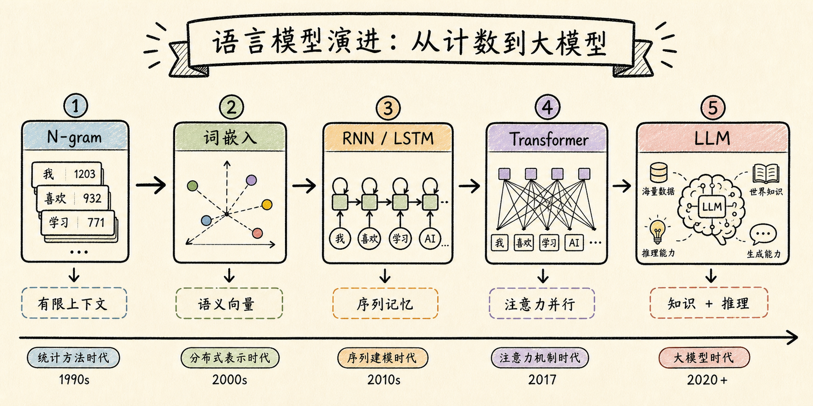
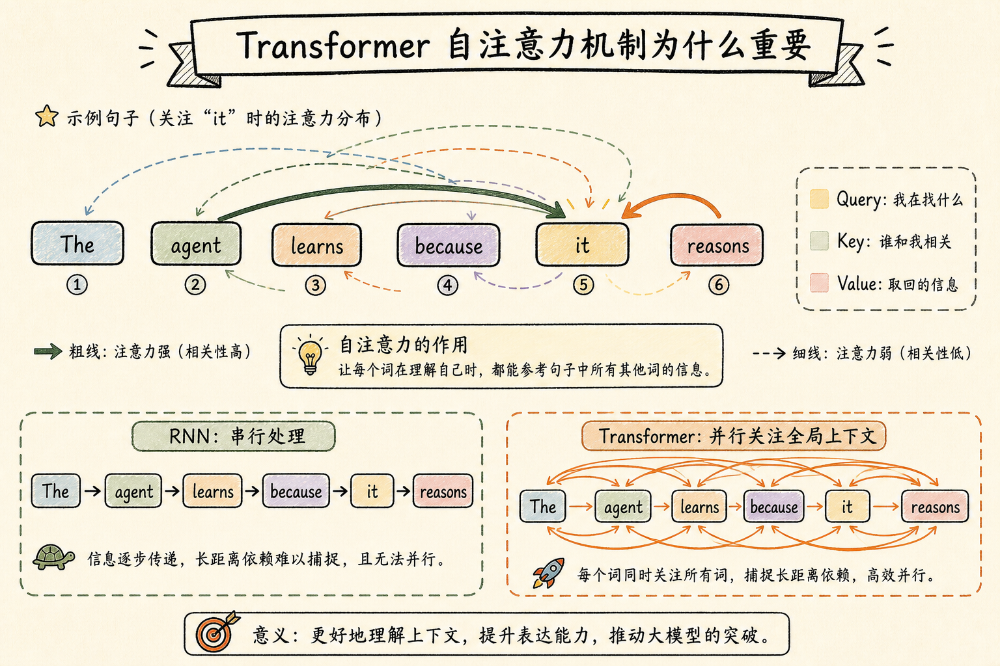
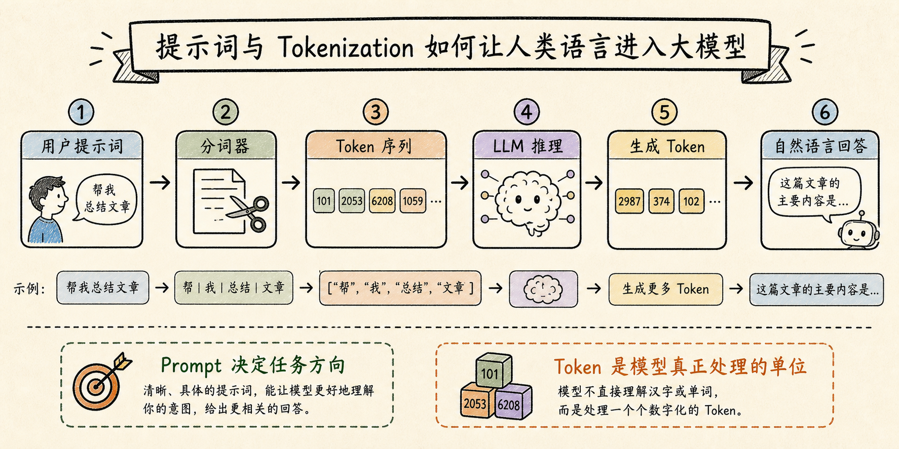
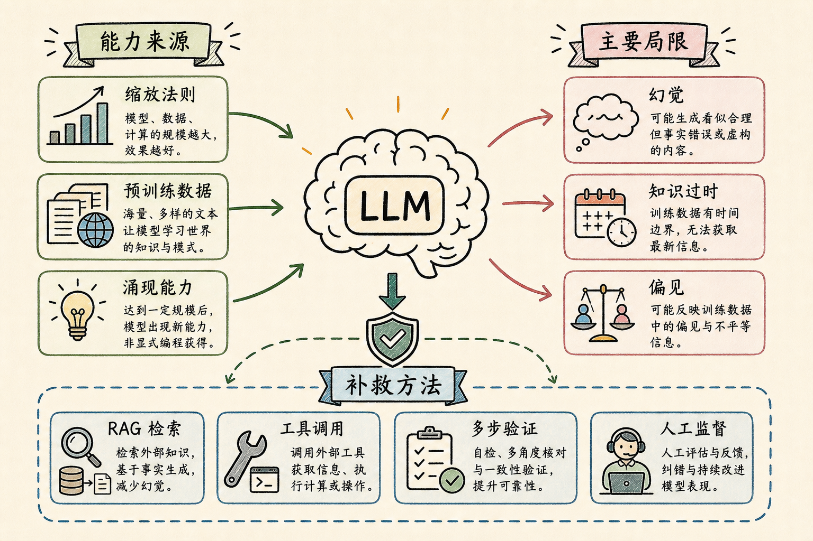

Hello agents学习chapter3
今天学习 Datawhale《Hello Agents》第三章《大语言模型基础》。前两章讲 Agent 是什么、从哪里来；这一章开始拆 Agent 的“大脑”：大语言模型是怎样从预测下一个词，一步步发展到能够承载知识、推理和工具调用的。

语言模型的本质：预测一个序列有多自然
本章开头讲语言模型的基本定义：它要计算一个词序列出现的概率。换句话说，语言模型要判断一句话是否通顺、自然，并在生成时预测下一个最可能出现的词或 token。
早期的 N-gram 模型很直观：一个词的出现，只看它前面有限几个词。比如 Bigram 只看前一个词，Trigram 看前两个词。这种方法简单、可解释，但缺点也明显：上下文太短、数据稀疏、不能理解词之间的语义相似性。
词嵌入：把离散词语放进连续语义空间
神经网络语言模型带来的关键变化，是不再把词当成孤立符号，而是把词表示成向量。这样一来，语义相近的词在空间里也会靠得更近。
我觉得词嵌入是一个非常重要的转折点。N-gram 只知道“这个词对出现过几次”，而词向量开始让模型具备泛化能力：即使没见过完全相同的句子，也能根据语义相似性做出更合理的判断。
RNN/LSTM：给序列模型加上记忆
RNN 的思路是按顺序读取文本，并把前面读到的信息存在隐藏状态里。它比固定窗口模型更像人类阅读，因为它试图把历史信息传递到后面。
但 RNN 也有自己的困难：它必须串行处理，不能大规模并行；序列很长时，还容易出现长期依赖问题。LSTM 通过门控机制改善了记忆传递，但仍然没有从根本上解决效率瓶颈。
Transformer：注意力机制成为关键突破
Transformer 最大的变化，是抛弃 RNN 的循环结构，改用注意力机制来建模词与词之间的关系。自注意力允许模型在处理某个 token 时，同时关注句子里的其他 token。
这让我理解了为什么 Transformer 对大模型如此重要：它不仅能捕捉长距离依赖，还能并行计算。没有这个并行能力，后面训练超大规模模型会困难很多。

Prompt 和 Token：人类语言进入模型的入口
本章还讲到和 LLM 交互时的两个关键概念：提示词和分词。Prompt 是我们给模型的任务说明，它会影响模型接下来如何理解目标、采用什么语气、输出什么格式。
但模型并不是直接处理完整的中文句子或英文单词，而是先通过 tokenizer 把文本切成 token，再把 token 转换成模型可以处理的数字表示。这个过程解释了为什么上下文窗口、token 数量、提示词长度都会影响模型表现和成本。

模型选型：闭源模型和开源模型各有位置
第三章也梳理了模型生态。闭源模型的优势是开箱即用、能力强、API 稳定，适合快速构建高性能应用；开源模型的优势是可控、可本地部署、可微调，更适合有隐私、成本或定制化要求的场景。
对 Agent 开发来说，模型选型不只是看榜单分数，还要看任务复杂度、上下文长度、工具调用能力、成本、延迟、安全性和生态支持。模型是 Agent 的大脑，但大脑也要放在具体任务里评估。
缩放法则与涌现能力
缩放法则说明，当模型参数量、训练数据量和计算量按比例增加时，模型性能通常会可预测地提升。后来 Chinchilla 定律进一步提醒我们，不是单纯参数越大越好，数据量和模型规模也要匹配。
当规模达到一定阈值后，模型会出现一些小模型不具备的能力，比如指令遵循、思维链推理、多步任务处理和代码生成。这些能力让 LLM 不再只是语言模型，而开始成为现代 Agent 的推理核心。
局限：幻觉、过时知识和偏见
这一章也没有只讲大模型的强大，而是认真讲了它的局限。模型幻觉是我最需要警惕的一点：LLM 本质上是在生成最可能的 token，而不是天然带有事实核查系统。
如果 Agent 直接相信模型输出，就可能推荐不存在的信息、编造引用、给出错误推理。缓解方法包括 RAG 检索、工具调用、多步验证和人工监督。也就是说，可靠 Agent 不是让模型“自由发挥”，而是给它配上外部事实来源和检查机制。

我的总结
学完第三章，我对 LLM 的理解更具体了：它不是神秘的“智能魔法”，而是从语言建模、向量表示、序列建模、注意力机制、大规模预训练一步步发展出来的系统。
对 Agent 来说，LLM 提供了理解、生成、规划和推理能力；但 Agent 的可靠性，还要靠上下文管理、工具调用、检索增强、验证流程和人类反馈共同支撑。下一章进入智能体经典范式时，这些基础应该会变得更有用。